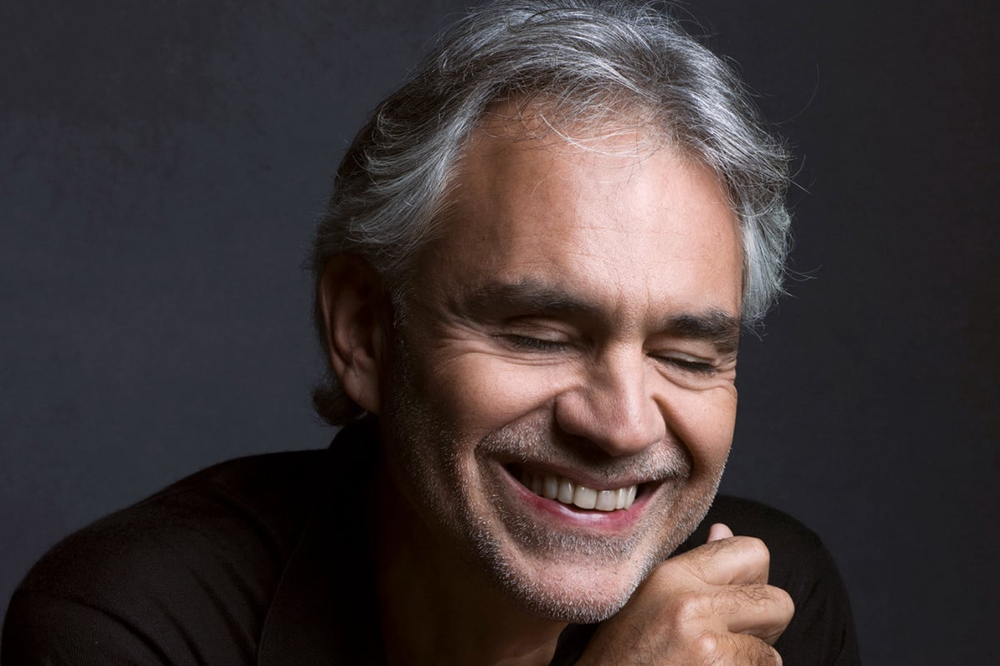

Andrea Bocelli
Born: 22 September 1958
Age:
Years Active: 1992-present
Genre/s: Opera, operatic pop, Latin pop, classical, traditional pop, pop
Label/s: Polydor, Decca, Universal
Andrea Bocelli (born 22 September 1958) is an Italian tenor. He rose to fame in 1994 after winning the newcomers' section of the 44th Sanremo Music Festival performing "Il mare calmo della sera".
Since 1994, Bocelli has recorded 15 solo studio albums of both pop and classical music, three greatest hits albums, and nine complete operas, selling over 90 million records worldwide. He has had success as a crossover performer, bringing classical music to the top of international pop charts. His album Romanza is one of the best-selling albums of all time, while Sacred Arias is the biggest selling classical album by any solo artist in history. My Christmas was the best-selling holiday album of 2009 and one of the best-selling holiday albums in the United States. The 2019 album Sì debuted at number one on the UK Albums Chart and US Billboard 200, becoming Bocelli's first number-one album in both countries. His song "Con te partirò", a duet with Sarah Brightman taken from his second album Bocelli, is one of the best-selling singles of all time.
In 1998, Bocelli was named one of People magazine's 50 Most Beautiful People. He duetted with Celine Dion on the song "The Prayer" for the animated film Quest for Camelot, which won the Golden Globe Award for Best Original Song and was nominated for the Academy Award for Best Original Song. In 1999, he was nominated for Best New Artist at the Grammy Awards. He captured a listing in the Guinness Book of World Records with the release of his classical album Sacred Arias, as he simultaneously held the top three positions on the US Classical Albums charts.
Bocelli was made a Grand Officer of the Order of Merit of the Italian Republic in 2006, and was later elevated to Knight Grand Cross in 2025. He was honoured with a star on the Hollywood Walk of Fame on 2 March 2010, for his contribution to Live Theater, and he was awarded a gold medal for Merit in Serbia in 2022. Singer Celine Dion has said that "if God had a singing voice, it would sound a lot like Andrea Bocelli", and record producer David Foster has often described Bocelli's voice as the most beautiful in the world.